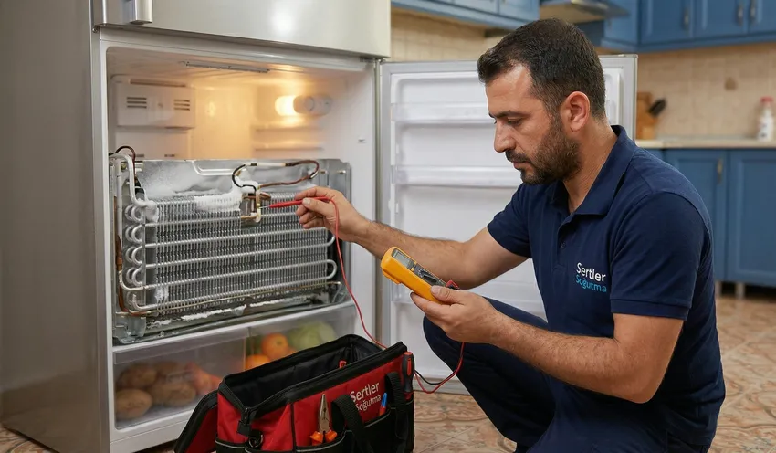

🌡️ Soğutma Sorunlarına Kesin Çözüm: Sertler Soğutma Tarsus Buzdolabı Tamircisi ile Arızalara Elveda!
Mutfaklarımızın kalbi, gıdalarımızın koruyucusu ve modern yaşamın en büyük konforlarından biri olan buzdolapları, özellikle Tarsus gibi sıcak iklimin hüküm sürdüğü bölgelerde hayati bir öneme sahiptir. Akdeniz’in kavurucu sıcaklarında bir buzdolabının arızalanması, sadece soğuk su içememek anlamına gelmez; aynı zamanda binlerce liralık gıdanın bozulması ve mutfak düzeninin alt üst olması demektir. İşte tam bu kritik süreçte, profesyonel bir Tarsus Buzdolabı Tamircisi bulmak, sorunu kökten ve kalıcı olarak çözmek için en doğru adımdır. Sertler Soğutma, yılların getirdiği deneyim ve teknik donanımıyla, Tarsus halkına güvenilir, hızlı ve garantili servis hizmeti sunarak "arızalara elveda" demenizi sağlıyor.
Buzdolabı teknolojileri her geçen gün karmaşıklaşmaktadır. Eski tip klasik dolaplardan modern inverter kompresörlü, akıllı sensörlü ve dijital ekranlı modellere kadar geniş bir yelpazede hizmet veren Sertler Soğutma, teknolojik değişimleri yakından takip eden uzman kadrosuyla fark yaratmaktadır. Bir Tarsus Buzdolabı Tamircisi olarak biz, sadece bozulan parçayı değiştirmekle kalmıyor, arızanın kök nedenini analiz ederek cihazınızın ömrünü uzatacak çözümler üretiyoruz. Bu makalede, buzdolabı arızalarıyla karşılaştığınızda neden profesyonel bir destek almanız gerektiğini, Sertler Soğutma'nın hizmet standartlarını ve Tarsus genelinde sunduğumuz kapsamlı çözümleri detaylarıyla bulacaksınız.

Tarsus Buzdolabı Tamircisi Uzman Görüşleri
Buzdolabı tamiri, dışarıdan bakıldığında sadece bir parça değişimi gibi görünse de aslında termodinamik yasalarının ve elektronik devrelerin uyum içinde çalışmasını gerektiren kompleks bir süreçtir. Deneyimli bir Tarsus Buzdolabı Tamircisi olarak uzmanlarımızın ortak görüşü, arızalara yapılan bilinçsiz müdahalelerin cihazı geri dönülemez bir noktaya getirebileceğidir. Özellikle gaz kaçakları, kompresör kilitlenmeleri veya anakart arızaları gibi durumlarda, doğru ekipmana sahip olmayan kişilerin yaptığı işlemler hem güvenlik riski oluşturur hem de maliyeti katlar.
Sertler Soğutma bünyesindeki ustalarımıza göre, Tarsus'taki buzdolabı arızalarının büyük bir çoğunluğu aşırı sıcaklardan kaynaklanan aşırı yüklenme ve düzenli bakım yapılmamasından kaynaklanmaktadır. Bir Tarsus Buzdolabı Tamircisi uzmanı, cihazın performansını artırmak için sadece tamir değil, koruyucu bakımın da önemini vurgular. Buzdolabının arkasındaki tozların temizlenmesi, kapı fitillerinin sızdırmazlık kontrolü ve termostat ayarlarının mevsime göre optimize edilmesi, büyük arızaların önüne geçen basit ama etkili adımlardır.
Uzmanlarımız, özellikle yeni nesil No-Frost ve Inverter sistemlerde orijinal yedek parça kullanımının hayati olduğunu belirtmektedir. Sertler Soğutma olarak biz, piyasadaki ucuz ve kalitesiz yan sanayi parçaların cihazın enerji verimliliğini düşürdüğünü ve diğer sağlam parçalara da zarar verdiğini gözlemliyoruz. Bir Tarsus Buzdolabı Tamircisi seçerken, firmanın teknik bilgisinin yanı sıra kullandığı parçaların kalitesini de sorgulamanız, uzun vadede bütçenizi korumanızı sağlar. Bizim uzman görüşümüz net: Doğru teşhis, kaliteli parça ve usta işçilik bir araya gelmeden gerçek bir tamirden söz edilemez.
Sertler Soğutma ile Yerinde Tamir Ayrıcalığı
Günümüzde zaman en değerli hazinedir ve arızalanan bir buzdolabının evden alınıp günlerce serviste kalması, modern bir hane için kabul edilebilir bir durum değildir. Sertler Soğutma, bu sorunu ortadan kaldırarak Tarsus Buzdolabı Tamircisi hizmetini doğrudan ayağınıza getirmektedir. Yerinde tamir ayrıcalığı sayesinde, cihazınızın taşınma esnasında darbe alması, çizilmesi veya nakliye sırasında sarsıntıya bağlı yeni arızalar oluşması gibi riskler tamamen ortadan kalkar.
Yerinde hizmet sunan bir Tarsus Buzdolabı Tamircisi ekibi olarak, gerekli tüm yedek parça ve test cihazlarını bünyesinde barındıran tam donanımlı mobil araçlarımızla adresinize geliyoruz. Buzdolabınız mutfağınızın orta yerinde, sizin gözünüzün önünde sökülür, arızası tespit edilir ve onayınız alındıktan sonra onarımı gerçekleştirilir. Sertler Soğutma’nın bu şeffaf hizmet anlayışı, müşterilerimizin ne için ödeme yaptığını görmesini ve yapılan işleme olan güvenini pekiştirir.
Tarsus’un hangi mahallesinde olursanız olun, yerinde tamir hizmetimizle buzdolabı arızalarını saatler içinde çözüme kavuşturuyoruz. Bir Tarsus Buzdolabı Tamircisi olarak en büyük amacımız, evinizin düzenini bozmadan cihazınızı çalışır hale getirmektir. Gaz dolumu, fan değişimi, rezistans onarımı gibi işlemlerin büyük bir kısmı ev ortamında yapılabilecek işlemlerdir. Sertler Soğutma, profesyonelliği mutfağınıza taşıyarak sizi nakliye zahmetinden ve uzun bekleme sürelerinden kurtarır.
Tarsus’ta Buzdolabı Onarımında Tek Adres
Tarsus gibi geniş bir coğrafyada hizmet veren birçok firma olsa da, Sertler Soğutma’yı bölgedeki diğer servislerden ayıran temel özellik, kurumsal disiplin ile esnaf samimiyetini birleştirmiş olmasıdır. Biz kendimizi sadece bir Tarsus Buzdolabı Tamircisi olarak değil, Tarsus halkının beyaz eşya konusundaki çözüm ortağı olarak görüyoruz. Arçelik, Beko, Bosch, Samsung, LG ve Siemens gibi dünya markalarının tüm modellerinde uzmanlaşmış ekibimiz, her arızaya markaya özel çözümler üretir.
Neden Tarsus’ta tek adres biziz? Çünkü Sertler Soğutma, verdiği sözü tutan, randevu saatine sadık kalan ve yaptığı işin arkasında duran bir işletmedir. Bir Tarsus Buzdolabı Tamircisi arayan vatandaşlarımız için en önemli kriter güvendir. Biz bu güveni, yıllardır binlerce mutlu müşterimizin referansıyla kazandık. Buzdolabınız soğutmadığında, gürültülü çalıştığında veya su akıttığında, sorunun ne olduğunu dürüstçe açıklıyor ve en ekonomik, en kalıcı çözüm yolunu sunuyoruz.
Tarsus’un yerel bir markası olarak, bölgenin su sertliğinden iklim koşullarına kadar her türlü dış etkenin cihazlar üzerindeki etkisini biliyoruz. Tarsus Buzdolabı Tamircisi denilince akla gelen ilk isim olmamız tesadüf değil, disiplinli çalışmamızın bir sonucudur. Sertler Soğutma, geniş servis ağı ve müşteri memnuniyetini odağa alan vizyonuyla, Tarsus’un her köşesine aynı kalite standartlarında hizmet ulaştırmaktadır. Siz de cihazınızı riske atmak istemiyorsanız, doğru adresin burası olduğunu bilmelisiniz.
Sertler Soğutma Donanımlı Tamir Merkezi
Buzdolabı tamiri bazen sahada (evde) çözülemeyecek kadar derin teknik müdahale gerektirebilir. Özellikle gövde içi gaz kaçaklarının tamiri, karmaşık anakart onarımları veya kompresörün laboratuvar ortamında test edilmesi gereken durumlarda, Sertler Soğutma'nın modern ve tam donanımlı tamir merkezi devreye girer. Bir Tarsus Buzdolabı Tamircisi olarak sahip olduğumuz bu merkez, en son teknoloji dijital ölçüm cihazları, vakum pompaları ve gaz şarj üniteleri ile donatılmıştır.
Tamir merkezimizde, cihazlar sadece tamir edilmez; aynı zamanda performans testlerine tabi tutulur. Onarımı tamamlanan bir buzdolabı, teslim edilmeden önce 24 saatlik test sürecinden geçer. Soğutma değerleri, termostatın kesme noktaları ve enerji tüketimi dijital olarak izlenir. Sertler Soğutma olarak bu titiz çalışmayı yapmamızın sebebi, müşterilerimize teslim ettiğimiz cihazın "sıfır hata" ile çalışmasını sağlamaktır. Tarsus Buzdolabı Tamircisi arayışınızda, arkasında güçlü bir teknik merkez olan firmayı seçmek size huzur verir.
Merkezimizde çalışan teknisyenlerimiz, periyodik olarak markaların teknik eğitimlerine katılarak bilgilerini tazelerler. Sertler Soğutma, sadece el yordamıyla değil, bilimsel yöntemlerle tamir yapar. Tarsus genelindeki tüm buzdolabı sahipleri için bu donanımlı merkez, en zorlu arızaların bile çözülebileceğinin bir garantisidir. Tarsus Buzdolabı Tamircisi hizmet kalitemizi artıran bu altyapı, bizi sektörün öncüsü konumuna getirmektedir.
### Tarsus Buzdolabı Tamircisi İletişim Bilgileri
Buzdolabı arızası anında hızlı iletişim hayati önem taşır. Gıdalarınızın bozulmaya başladığı her saniye aleyhinize işler. Sertler Soğutma, bu durumun bilinciyle Tarsus halkına en hızlı iletişim kanallarını sunmaktadır. Bir Tarsus Buzdolabı Tamircisi olarak bize ulaşmak oldukça basittir. Telefon hatlarımız üzerinden doğrudan teknik ekibimizle görüşebilir, arızanın mahiyetini anlatarak ön bilgi alabilirsiniz.
İletişim bilgilerimiz üzerinden yapacağınız başvurularda, konum bilginizi ve cihazın markasını paylaşmanız yeterlidir. Sertler Soğutma, WhatsApp destek hattı veya doğrudan arama yoluyla gelen tüm talepleri anlık olarak değerlendirir. Tarsus Buzdolabı Tamircisi ekibimiz, en yakın mobil aracımızı adresinize yönlendirerek müdahale süresini dakikalara indirir. Bizimle iletişime geçtiğinizde, karşınıza bir sekreter değil, cihazınızın dilinden anlayan bir teknik sorumlu çıkar.
Sadece arıza anında değil, bakım ve danışma amaçlı da Sertler Soğutma iletişim kanallarını kullanabilirsiniz. Tarsus’un yerlisi olan firmamız, bölgedeki her sokağa hakimdir. Tarsus Buzdolabı Tamircisi hizmetimizden faydalanmak için web sitemizdeki iletişim formunu doldurabilir veya telefon numaralarımızdan bize 7/24 ulaşabilirsiniz. Unutmayın, doğru iletişim hızlı çözümü beraberinde getirir.
Sertler Soğutma ile Motor Onarım Süreci
Buzdolabının motoru (kompresörü), cihazın en kritik ve en pahalı parçasıdır. Motor arızalandığında buzdolabı tamamen işlevsiz kalır. Sertler Soğutma, motor onarımı ve değişimi konusunda uzmanlaşmış bir Tarsus Buzdolabı Tamircisi olarak, bu süreci büyük bir titizlikle yönetir. Motorun neden yandığını veya neden devreye girmediğini anlamak için öncelikle elektrik hattı, termik-röle grubu ve kapasitör değerleri ölçülür.
Eğer motorun tamiri mümkün değilse ve değişim gerekiyorsa, Sertler Soğutma sadece en kaliteli ve orijinal kompresörleri kullanır. Motor değişimi basit bir sök-tak işlemi değildir; sistemin içindeki eski gazın tahliye edilmesi, sistemin azotla yıkanması, kurutucu filtrenin (drayer) yenilenmesi ve ardından hassas terazi ile gaz şarjının yapılması gerekir. Bir Tarsus Buzdolabı Tamircisi olarak biz, bu adımların hiçbirini atlamadan, fabrikasyon standartlarında motor değişimi yapıyoruz.

Motor onarım sürecinde cihazın enerji verimliliği de göz önünde bulundurulur. Yeni takılan motorun cihazla uyumu, ses seviyesi ve soğutma hızı test edilir. Sertler Soğutma, yaptığı motor değişimlerine uzun süreli garanti vererek müşterisini koruma altına alır. Tarsus Buzdolabı Tamircisi ihtiyacınızda, cihazın kalbini uzman ellere teslim etmek istiyorsanız biz buradayız.
Düzenli bakım ve doğru kullanım, arıza riskini azaltır ve cihazın ömrünü uzatır.
Tarsus’un Deneyimli Buzdolabı Ustaları
Bir işi kaliteli kılan, o işi yapan ellerin tecrübesidir. Sertler Soğutma kadrosu, Tarsus’un en deneyimli ve çekirdekten yetişmiş buzdolabı ustalarından oluşmaktadır. Her bir ustamız, binlerce farklı arıza modelini bizzat çözmüş, eski ve yeni teknolojileri harmanlamış uzmanlardır. Bir Tarsus Buzdolabı Tamircisi olarak ustalığın sadece tamir etmek değil, aynı zamanda müşteriye nezaketle hizmet etmek olduğuna inanıyoruz.
Ustalarımız, cihazın başındayken sadece sorunu gidermez; aynı zamanda cihazın genel durumunu inceler ve gelecekte oluşabilecek muhtemel arızalar hakkında sizi uyarır. Sertler Soğutma bünyesinde çalışan her usta, meslek etiğine ve müşteri mahremiyetine son derece saygılıdır. Tarsus’un en iyi Tarsus Buzdolabı Tamircisi ekibiyle çalışıyor olmanın rahatlığını, ustalarımız evinizde çalışırken hissedeceksiniz.
Deneyimimiz, markaların kronik sorunlarını ezbere bilmemizi sağlar. Örneğin, belirli bir modelin neden sürekli buzlanma yaptığını veya bir başka modelin neden kart arızası verdiğini bilerek adrese gidiyoruz. Bu durum, Sertler Soğutma olarak bize hız, size ise kesin çözüm kazandırır. Tarsus Buzdolabı Tamircisi ustalarımızla, cihazınız emin ellerde, gıdalarınız güvende kalır.
Sertler Soğutma Arıza Tespit Formu
Modern servis anlayışımızın bir parçası olarak, her arıza kaydı için bir "Arıza Tespit Formu" oluşturuyoruz. Bu form, buzdolabınızın mevcut durumunu, tespit edilen arızaları, değişmesi gereken parçaları ve tahmini onarım süresini içeren resmi bir belgedir. Sertler Soğutma olarak bu şeffaflığı sunmamızın amacı, müşterimizin ne için hizmet aldığını net bir şekilde bilmesini sağlamaktır. Bir Tarsus Buzdolabı Tamircisi olarak kurumsallığımızın bir simgesidir.
Arıza tespit formu sayesinde, yapılan her işlemin kaydı tutulur. Cihazınızın geçmiş servis kayıtlarına bakarak, tekrarlayan sorunlar olup olmadığını analiz edebiliriz. Sertler Soğutma, arıza tespiti yapmadan asla ezbere iş yapmaz. Tarsus Buzdolabı Tamircisi ekibimiz adrese geldiğinde, dijital veya yazılı olarak bu formu doldurur ve bir nüshasını size teslim eder.
Bu form aynı zamanda garanti sürecinin de başlangıcıdır. Değişen parçaların seri numaraları ve yapılan işçilik detayları bu formda yer alır. Sertler Soğutma ile çalışırken "Hangi parça değişti?", "Ne kadar garanti verildi?" gibi sorular havada kalmaz. Tarsus Buzdolabı Tamircisi olarak sunduğumuz bu profesyonel dokümantasyon, hizmet kalitemizin bir kanıtıdır.
#### Tarsus Buzdolabı Tamircisi Ücretleri
Buzdolabı sahiplerinin en çok merak ettiği konulardan biri de tamir maliyetleridir. Öncelikle belirtmek gerekir ki, profesyonel bir Tarsus Buzdolabı Tamircisi hizmeti alırken ödenecek ücret, merdiven altı tamircilerin cihazda açabileceği ekstra zararlar göz önüne alındığında oldukça ekonomiktir. Sertler Soğutma olarak biz, fiyatlandırma politikamızı "adil hizmet, adil ücret" ilkesi üzerine kurduk. Ücretlerimiz belirlenirken arızanın türü, değişecek parçanın güncel maliyeti ve işçilik süresi gibi objektif kriterler esas alınır.
Tamir ücretleri konusunda net bir rakam vermek cihazı görmeden mümkün değildir; zira bir sensör arızası ile bir anakart yanması arasında maliyet açısından büyük farklar vardır. Ancak Sertler Soğutma, Tarsus genelinde en rekabetçi ve ulaşılabilir fiyat tekliflerini sunmayı taahhüt eder. Bir Tarsus Buzdolabı Tamircisi olarak, müşterilerimize öncelikle arıza tespitini yapıp maliyeti onaylarına sunuyoruz. Sizin onayınız olmadan hiçbir parça değişimi veya ek işlem gerçekleştirmiyoruz.
Müşterilerimize sunduğumuz ödeme kolaylıkları ve şeffaf fiyatlandırma, bizi Tarsus’un en çok tercih edilen servisi yapmaktadır. Sertler Soğutma, haksız kazançtan kaçınan, sadece hak ettiği işçilik bedelini talep eden bir işletmedir. Tarsus Buzdolabı Tamircisi ücretleri hakkında genel bir bilgi almak için bizi arayabilir, servis ücreti ve işleyişimiz hakkında detayları öğrenebilirsiniz. Kaliteli hizmetin lüks değil, herkesin hakkı olduğuna inanıyoruz.
Sertler Soğutma Fan Motoru Tamiri
Buzdolaplarında hem dondurucu hem de soğutucu bölmelerde havanın sirkülasyonunu sağlayan fan motorları bulunur. Fan motoru arızalandığında dolap içinde hava akışı durur ve soğutma işlemi gerçekleşmez. Sertler Soğutma, fan motoru tamiri ve değişimi konusunda derin bir uzmanlığa sahip olan bir Tarsus Buzdolabı Tamircisi firmasıdır. Fanın yavaş dönmesi, gürültü yapması veya tamamen durması gibi şikayetlerinizde anında müdahale ediyoruz.
Fan motoru arızaları genellikle tozlanma, yağsız kalma veya elektriksel kısa devrelerden kaynaklanır. Sertler Soğutma teknisyenleri, fanı sökerek öncelikle temizliğini yapar ve yağlama ile kurtarılabilecek durumdaysa tamirini gerçekleştirir. Eğer motor sargıları yanmışsa, cihazın performansına uygun orijinal yedek fan ile değişim yapılır. Bir Tarsus Buzdolabı Tamircisi olarak, fan motorunun sadece çalışması değil, sessiz ve verimli çalışması bizim için esastır.
Özellikle yaz aylarında buzdolabınızdan "tak tak" veya "vınlama" gibi sesler geliyorsa bu fan motoru arızasının habercisi olabilir. Sertler Soğutma, bu tip sorunları yerinde ve kısa sürede çözer. Tarsus Buzdolabı Tamircisi hizmetimiz kapsamında, fan motoru tamiri sonrası hava kanallarının açık olup olmadığını da kontrol ederek cihazın iç ısı dengesini yeniden kuruyoruz.
Sensör Değişimi ve Kontrolü
Yeni nesil buzdolapları, içerideki sıcaklığı milimetrik olarak ölçen sensörlerle (NTC/PTC) doludur. Bu sensörler anakarta bilgi göndererek kompresörün veya fanların ne zaman çalışacağını belirler. Sensör arızalandığında buzdolabı gıdaları dondurabilir veya hiç soğutmayabilir. Sertler Soğutma, dijital ölçüm aletleriyle bu sensörlerin ohm değerlerini ölçerek nokta atışı tespit yapan bir Tarsus Buzdolabı Tamircisi kuruluşudur.
Sensör değişimi hassas bir işlemdir. Yanlış değerde takılan bir sensör, buzdolabının beynini (anakartını) yanıltarak kompresörün gereksiz yere sürekli çalışmasına ve yanmasına neden olabilir. Sertler Soğutma olarak biz, her marka ve modele uygun orijinal sensör setlerini kullanıyoruz. Bir Tarsus Buzdolabı Tamircisi uzmanlığıyla, sensörlerin yanı sıra kablo hatlarını ve soket girişlerini de kontrol ederek elektriksel bir kopukluk olup olmadığını denetliyoruz.
Buzdolabınızın ekranında hata kodu (E1, E2, F1 vb.) görüyorsanız bu genellikle bir sensör sorununa işarettir. Sertler Soğutma teknik ekibi, bu hata kodlarının anlamlarını bilerek hazırlıklı gelir. Tarsus Buzdolabı Tamircisi hizmetimizle, dijital teknolojinin getirdiği bu karmaşık sorunları profesyonelce çözüme kavuşturuyoruz.
Sertler Soğutma Hızlı Müdahale Ekibi
Tarsus’un kavurucu sıcağında buzdolabı arızası bir dakika bile beklemeye gelmez. Bu bilinçle kurduğumuz "Hızlı Müdahale Ekibi", Tarsus’un neresinde olursanız olun size en kısa sürede ulaşmayı görev edinmiştir. Sertler Soğutma’nın bu özel ekibi, acil arıza kayıtlarına öncelik vererek gıdaların bozulma riskini minimize eder. Bir Tarsus Buzdolabı Tamircisi aradığınızda, "bugün git yarın gel" mantığıyla değil, "şimdi geliyoruz" prensibiyle çalışıyoruz.
Hızlı müdahale ekibimiz, mobil teknoloji sayesinde merkezle sürekli iletişim halindedir. Adresinize en yakın olan servis aracımız, navigasyon sistemimiz üzerinden size yönlendirilir. Sertler Soğutma olarak bu lojistik gücümüz, bizi Tarsus’un en hızlı servis sağlayıcısı yapmaktadır. Bir Tarsus Buzdolabı Tamircisi olarak hızımız, kalitemizin önüne geçmez; aksine hızlı müdahale ederek cihazın daha büyük hasarlar almasını önleriz.
Ekibimiz her zaman tam donanımlıdır. En sık bozulan yedek parçalar araçlarımızda hazır bulunur, böylece parça beklemekle zaman kaybetmezsiniz. Sertler Soğutma ile arızanın tespiti ve tamiri genellikle aynı gün, hatta birkaç saat içinde tamamlanır. Tarsus Buzdolabı Tamircisi ihtiyacınızda, zamanla yarıştığımızın farkındayız ve sizi asla yarı yolda bırakmıyoruz.
Hemen Servis Talebinde Bulunun
Arıza tespiti, bakım veya onarım için aynı gün içinde servis yönlendirebiliriz.
Sıkça Sorulan Sorular
Bu sorunun birçok sebebi olabilir. En yaygın olanları; gaz kaçağı oluşması, fan motorunun arızalanması, kompresörün kalkış yapamaması veya No-Frost sistemindeki buz çözme (defrost) arızasıdır. Sertler Soğutma olarak yerinde yapacağımız analizle sorunu kesin olarak belirleyebiliriz. Tarsus Buzdolabı Tamircisi ekibimiz bu tip durumları kısa sürede çözer.
Evet, normal dışı sesler genellikle bir mekanik arızanın habercisidir. Fan pervanesine çarpan bir cisim veya motorun içindeki pistonların aşınması bu seslere neden olabilir. Cihazı bu şekilde çalıştırmaya devam etmek arızayı büyütebilir. Sertler Soğutma teknisyenlerini çağırarak sesin kaynağını bulmalarını isteyebilirsiniz. Tarsus Buzdolabı Tamircisi desteğimizle cihazınızı susturuyoruz.
Çoğu arıza (fan değişimi, sensör onarımı, röle değişimi) 1-2 saat içinde yerinde çözülür. Ancak gaz şarjı veya motor değişimi gibi işlemler 3-4 saat sürebilir. Eğer cihazın merkeze alınması gerekirse, bu süreç genellikle 24-48 saat arasındadır. Sertler Soğutma olarak en hızlı Tarsus Buzdolabı Tamircisi hizmetini sunmayı hedefliyoruz.
Kesinlikle. Değiştirdiğimiz tüm parçalar ve verdiğimiz işçilik hizmeti firmamızın garantisi altındadır. Garanti süresi yapılan işleme göre değişmekle birlikte, size verilen servis formunda bu süre açıkça belirtilir. Sertler Soğutma, yaptığı her işin arkasındadır. Tarsus Buzdolabı Tamircisi güvenin adresidir.
Evet, buzdolabının çok elektrik yakması genellikle motorun durmadan çalışmasından kaynaklanır. Bunun sebebi ise kapı fitillerinin hava sızdırması, gaz eksikliği veya termostat arızası olabilir. Sertler Soğutma olarak yapacağımız bir genel bakım ve arıza giderme işlemiyle enerji tasarrufu sağlamanıza yardımcı olabiliriz. Tarsus Buzdolabı Tamircisi ile faturalarınızı düşürün.
Piyasada bulunan tüm yerli ve yabancı markalara hizmet veriyoruz. Arçelik, Beko, Vestel, Bosch, Profilo, Samsung, LG, Hotpoint ve Sharp gibi markaların hem eski hem de en yeni modellerinde uzmanız. Sertler Soğutma, geniş yedek parça ağıyla her markaya hitap eden bir Tarsus Buzdolabı Tamircisi firmasıdır.
Servis ücretlerimiz; arıza tespiti için ayrılan zaman, gidilen mesafe ve sunulan teknik raporlama hizmetini kapsar. Tamir onayı vermeniz durumunda servis ücreti genellikle toplam onarım bedeli içinde değerlendirilir. Sertler Soğutma, şeffaf fiyatlandırma politikası güden dürüst bir Tarsus Buzdolabı Tamircisi işletmesidir.
Aslında buzdolabı gazı biten bir şey değildir; sistem kapalı bir devredir. Eğer gaz azalmışsa mutlaka borularda bir delinme veya ek yerlerinde bir kaçak vardır. Gaz basmadan önce bu kaçağın bulunup kapatılması gerekir. Sertler Soğutma, sadece gaz basıp gitmez; kaçağı tamir ederek kalıcı çözüm sunar. Tarsus Buzdolabı Tamircisi hizmetimizde kalite esastır.
Sonuç ve Uzman Tavsiyesi
Buzdolabı arızaları, can sıkıcı olsa da doğru uzmanla çalışıldığında hızlıca çözülebilen sorunlardır. Tarsus halkının yıllardır güvendiği Sertler Soğutma, profesyonel yaklaşımı, donanımlı altyapısı ve deneyimli kadrosuyla bu süreci sizin için en kolay hale getirmektedir. Bir Tarsus Buzdolabı Tamircisi seçerken sadece fiyata değil, firmanın tecrübesine, sunduğu garantiye ve müşteri yorumlarına odaklanmanız cihazınızın sağlığı için kritiktir.
Cihazınızda bir sorun hissettiğinizde beklemek, genellikle daha küçük maliyetli bir arızanın büyüyerek daha pahalı bir tamire dönüşmesine neden olur. Sertler Soğutma olarak tavsiyemiz, yılda en az bir kez buzdolabınızın genel bakımını yaptırmanız ve arıza anında vakit kaybetmeden uzman bir Tarsus Buzdolabı Tamircisi desteği almanızdır. Biz, Tarsus'un her mahallesinde, her sokağında sizlere bir telefon kadar yakınız.
Soğutma teknolojilerindeki uzmanlığımız ve müşteri odaklı hizmet anlayışımızla, gıdalarınızı ve bütçenizi korumaya devam ediyoruz. Sertler Soğutma isminin arkasındaki yılların tecrübesine güvenin. Buzdolabınız arızalandığında endişelenmeyin; Tarsus Buzdolabı Tamircisi denilince ilk akla gelen firmamızı arayın ve sorunun profesyonelce, hızlıca ve garantili bir şekilde çözülmesini izleyin. Sizlere bir telefon kadar yakınız; serin ve mutlu günler dileriz!